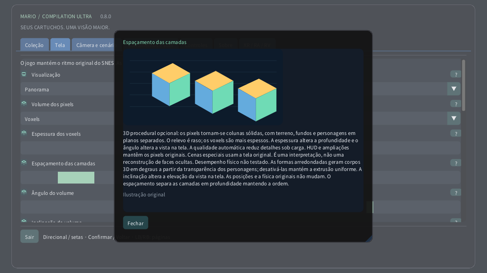

Volume dos pixels

No computador ou dispositivo com toque, abra Tela → Volume dos pixels. Comece com Relevo de pixels para profundidade sutil e depois experimente Voxels. A espessura muda o corpo de cada pixel; o espaçamento afasta as camadas sem alterar a ordem. No Quest, use a página Volume do controle espacial. No relógio, a coroa aproxima da área inteira até a tela original.
- 0 · 2D original
- 1 · Relevo dos pixels
- 2 · Voxels
3D procedural opcional: os pixels tornam-se colunas sólidas, com terreno, fundos e personagens em planos separados. O relevo é raso; os voxels são mais espessos. A espessura altera a profundidade e o ângulo altera a vista na tela. A qualidade automática reduz detalhes sob carga. HUD e ampliações mantêm os pixels originais. Cenas especiais usam a tela original. É uma interpretação, não uma reconstrução de faces ocultas. Desempenho físico não testado. As formas arredondadas geram corpos 3D em degraus a partir da transparência dos personagens; desativá-las mantém a extrusão uniforme. A inclinação altera a elevação da vista na tela. As posições e a física originais não mudam. O espaçamento separa as camadas em profundidade mantendo a ordem.
Configurações ilustradas
- Espessura dos voxels
- 1–16 px
- Espaçamento das camadas
- 1–12 px
- Ângulo do volume
- −30° … +30°
- Inclinação do volume
- −30° … +30°
- Formas de voxels arredondadas
